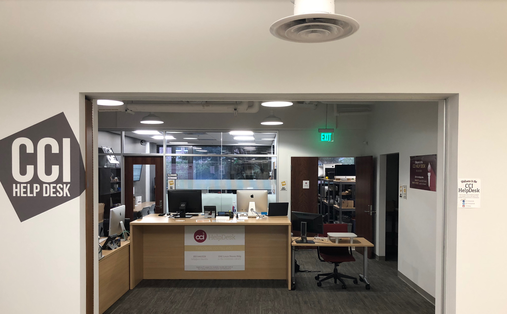

I am currently a Senior pursuing a Bachelor's in Information Technology at Florida State University.
I am a motivated individual interested in many aspects of Information Technology, from consulting to development. I chose to work during school to gain
as much experience as possible, alongside my degree. I've learned valuable lessons in management due to my position as IT manager for a local bartending business.
I've undertaken a variety of projects with a large amount of responsibility in all of them. Everything from nested if-statements in Excel spreadsheets
to online ordering forms, I've learned how to excecute solutions to improve a business. While my organization does not require very advanced IT skills,
it is a great learning experience.
Work

HelpDesk Technician - FSU College of Communication and Information
My role as a HelpDesk Technician has allowed me to learn more about Mac OS and Bash scripting, something I normally
would never have undertaken. Although I strongly prefer Windows and Linux operating systems, I took on the responsibility
of managing MacOS adminstration and deployment of FSU's CCI college.
***********ADD PIC HERE***********
I ressurected the antqiuated deployment scheme into a modern, flexible deployment workflow. Using Deploy Studio, fellow HelpDesk Technicians are able to image faculty Mac computers and student computer lab systems
with ease. Combining Deploy Studio's workflows and an in-house bash script, my new deployment scheme vastly improved Mac deployments.
IT Manager - On the Rocks Bartending
I began my On the Rocks career as a bartender, and worked my way up to managing 30+ employees, developing a system that is responsible for $30,000+ of event orders,
and handling all Gsuite and domain administration. My first task was to create a complicated Excel spreadsheet for estimating alcohol costs for clients. This tool
was a big success, and I utilized what tools I had, which was Excel. Today, I might have made it into a web application for portablity, but the system worked.
My next large task was to revamp email adminstration. The owner of On the Rocks was paying way too much to an IT consultant for hosting email services. I took control of all the
domains and handled a large email migration to Gsuite, which was a scary endeavor. I couldn't afford to lose any of the thousands of emails accured over the years. Since migrating to Gsuite,
I have been able to improve secruity and save On the Rocks hundrends of dollars a year.
***********ADD PIC HERE***********
Lastly, my biggest endeavor was an online ordering form. On the Rocks has an older, and technologically slower, clientbase. What I built had to be extremely user friendly,
from the customer's point-of-view, and the business'. If our Office Coordinator could not easily access client's data, the system would go unused.
I built an online ordering form that is clean and responsive.
***********ADD PIC HERE***********